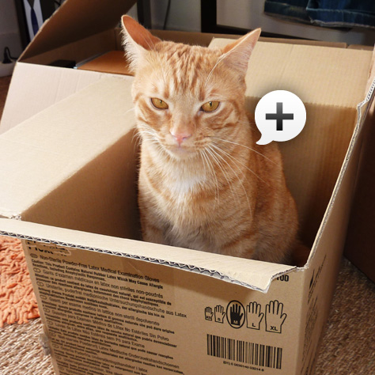
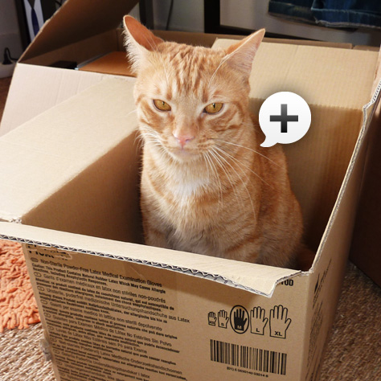

-
Prono+ est en cours de maintenance
Pas de panique ! Prono+ est en cours de maintenance.
Revenez dans quelques minutes !
En attendant, voici une photo d'un chat :

Pas de panique ! Prono+ est en cours de maintenance.
Revenez dans quelques minutes !
En attendant, voici une photo d'un chat :
